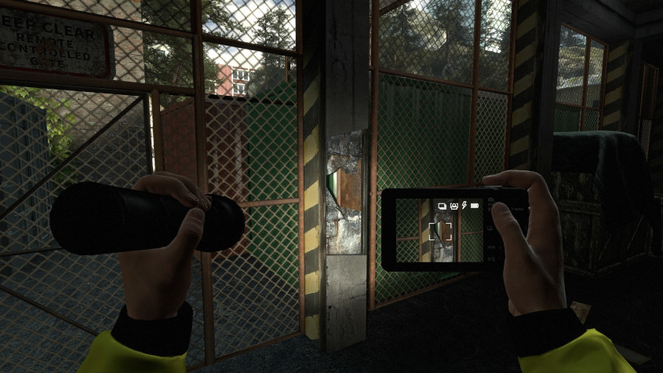

Infra

Released in 2016, played by me on Linux in 2022.
So much to love about this game. My enjoyment was perhaps stoked by my initial expectation that such a humdrum, non-mainstream game idea - of a civil engineer performing building inspections, documenting elements such as cracks and exposed rebar - must surely be a modest indie offering. But that expectation was vastly exceeded by the overwhelming generosity of the included content, providing level after level after level, all rich in geometry and atmosphere, navigable pathways surrounded by loads of non-essential scene setting, from broom cupboards to passing container ships, replete with specially coded set-pieces, and a story that expands in scope beyond all possible initial expectations.
It is filled with puzzles that are grounded in the atmospheric setting, having me clamber under cobweb-strewn desks with a flashlight, looking for tripped circuit breakers. The setting itself builds beautifully, starting with my inspection of bridges and decrepit sawmills as I wander along a small overgrown river path, but increasing in scope and severity as we continue downstream into town, culminating in varied and ambitious city facilities, from water treatment plants, abandoned sprawling secret WWI facilities, and various types of railway and power stations.
The puzzle difficulty is perfectly judged, demanding about the limit of effort I could bring to bear, and only on one or two occasions did I give up and find solutions online, leading overall to a tremendous sense of accomplishment.
The storyline exposes longstanding secretive corruption in the city, explaining both the pervasive neglect and sabotage that your inspections reveal, and it provides a variety of creative reasons why the buildings on your route are either long-abandoned, or else hastily evacuated moments before your arrival.
This gives you gloriously free reign over the facilities you pass through, opening up possibilities to perform ad-hoc repairs as you go. In particular, I particularly loved the way a successful navigation of levels like the water treatment plant requires the player to cross reference wall charts showing how the plant operates, with computer schematics showing the state of various machinery and valves, and overlay on top of that an understanding of a few signs and hand-written notes left behind by operators, to remind themselves about proper operating procedures, broken equipment, workarounds, and switches that were wired up backwards. And once you figure out this abstract understanding of what needs to be done, you have to map it all onto the actual 3D spatial layout of the massive hardware all around you, which often spans multiple buildings. Just delightful.
I should probably also mention the penultimate level, which is one of the most ambitious of many bold experiments that keep the levels diverse and surprising, by straying away from the core conceit. In this case that means navigating the locked-down hallways of an alternative, mushroom obsessed commune, squatting in a depressing tower block surrounded by trash. While this level is laudable for being the boldest of these experiments, and represents an important pillar of the narrative, an alternate society dropping out from the dysfunction induced in the city by the main story line. However, it didn't quite land for me, and I soon consulted an online walkthrough, without which I think I would have been trudging its grimy corridors for a long and dispiriting time. As it was, in contrast to the entire rest of the game, I was pleased to get it done as quickly as possible and move on without getting into its optional exploration and side-quests.
But other than that one level, I loved this game, and played it with a passion and obsession that burned fiercely for weeks.